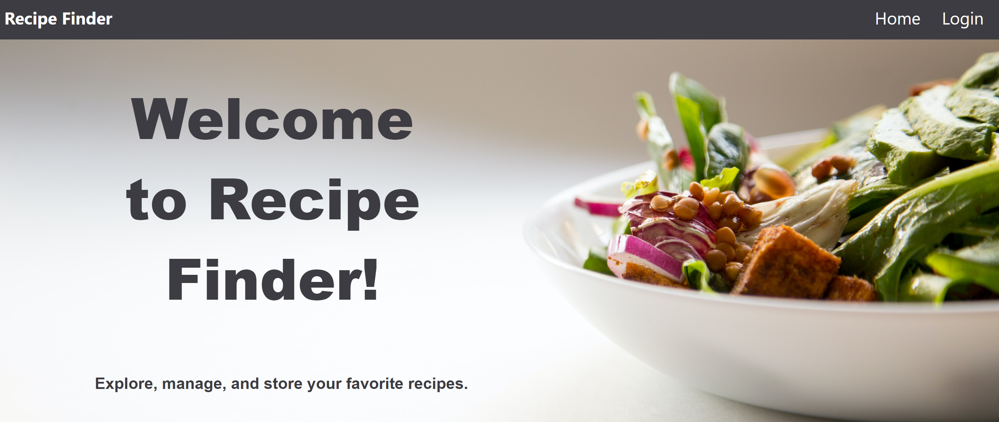
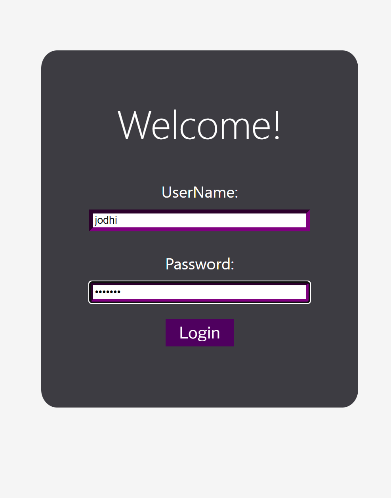
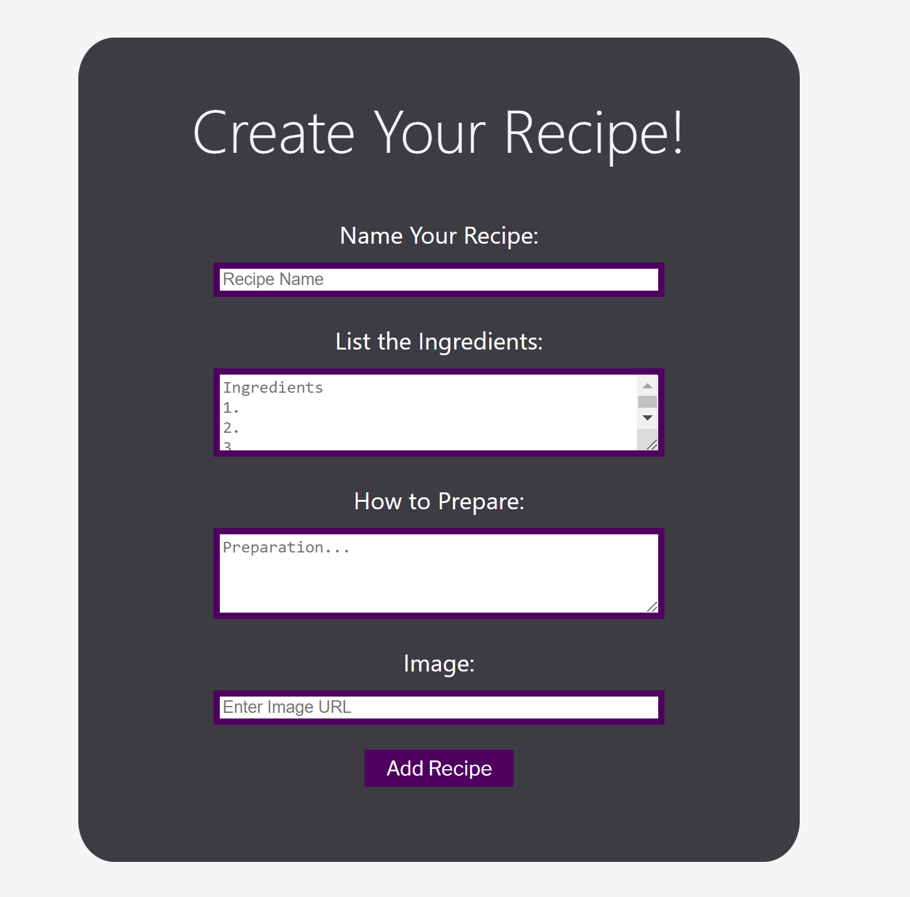
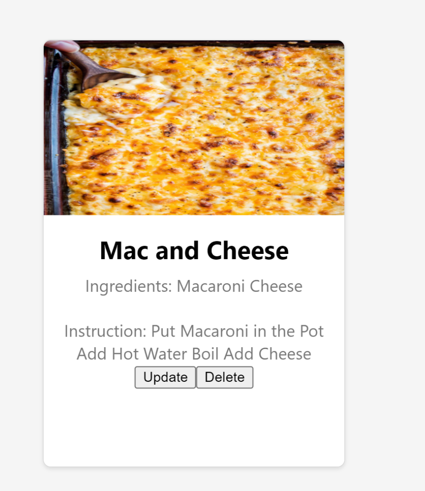

For my csci4300 Web Development Final Project, we worked in groups to design and build a full stack CRUD (create, read, update and delete) application. We would work with our groups to come up with a problem to solve and design the application to solve it, and consider a unique way to search, sort or filter the subject components.
Using JSON Web Tokens, we created a secure signup/login form that took an email, a username, and a password in order to verify users; the verified users would then have access to adding, updating, and deleting their recipes. In order to set up authentication middleware on Recipe Finder, we learned BCryptJS, a module which enables storing passwords through hashing, ensuring data message integrity. We used MongoDB to store these accounts, thus creating a database of users, all of which is stored securely by this hashing function. We had two databases in total to keep things simple for the project, one for the users, and one for the recipes.


After logging in to your account, you would be able to create and manage recipes on the website. As an example, I created a Mac and Cheese recipe shown on the right.
Some of the key implementations my team developed were basic React functions, reusable component design, authentication middleware, MongoDB and Atlas cloud implementation, and establishing endpoints for each of the CRUD and user account operations.
